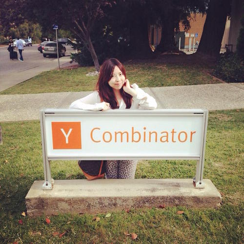

Reverse Rock, Paper, MYO
Y Combinator
This game allows you to use MYO to control hand movement gestures to play a game of "Rock, Paper, Scissors" with a twist. Instead of trying to win the game based on the original strategy, the objective is to purposely lose to gain points, within the time frame set. On the screen, the player would be presented with a computer generated move (either rock, paper, "scissors") that he/she would have to counter-attack with his/her own move in order to gain a point. If the player incorrectly makes a wrong move, the timer runs all the way down to zero, and the game ends. If the player makes the same gesture move as the generator, the game ignores the move, and the player is allowed to play another gesture move.

Key Features Use of MYO gesture armband iOS game device Novel remake of the original "Rock, Paper, Scissors" game
Target Audience Gesture armband enthusiasts iOS gamers
Built With cocos2d myo spritebuilder hardware ios